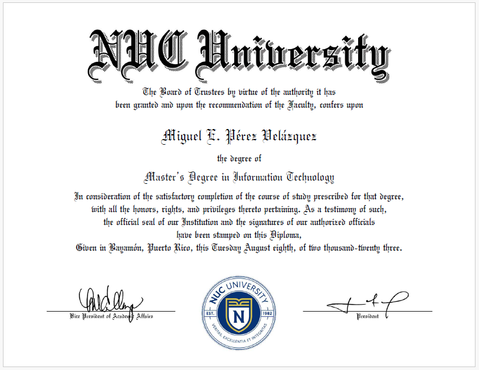

Technical professional focused on process integrity, safety, and efficiency in highly regulated environments.
A combination of studies in technology that has helped me tackle challenges encountered at various companies.

Information & Automation Technician with a 8-year track record in FDA-regulated industries, electronics, and IT.
Specialized in the operation and maintenance of high-stakes automated systems and the management of secure networking infrastructures.
Ensured operational excellence by resolving complex technical issues and aligning technology across all departments to support business continuity.
Focused background in cybersecurity and network defense. Experienced in identifying system vulnerabilities using industry-standard tools.
Act as second- or third-level support to resolve complex end-user issues that cannot be handled by the help desk.
| Parmaceutical | Electronics | Information Technology |
|---|---|---|
| cGMPs,Traceability | ESD | Agile, Scrum, PMBOK |
| Environmental, Health, and Safety (EHS) | ATE | GDPR, SOX, Gramm–Leach–Bliley Act (GLBA), HIPAA |
| Lock out Tag Out (LOTO) | HP 3070 | ITIL, TCP/IP |
| CAPA | SMT/THM Component Inspection | PenTesting |
| FIFO, PPE, MSDS | QC | NIST Cybersecurity Framework |
| Quality Management Systems (QMS) | QA | CIA Triad, Zero Trust |
Primary role in the maritime industry, focusing on the maintenance, troubleshooting, and repair of diesel engines and power systems on vessels while they are in dry dock.
(Granulation)
Operate high-shear mixer, fluid bed dryers, and blenders, including performing machine changeovers, calibration, and preventative maintenance. Weigh, dispense, mix, and granulate materials, while accurately documenting all steps in logbooks and batch records. Inject the granulating solution chronometrically into the High Shear Mixer during the manufacturing of Mevacor (lovastatin) and Zocor (simvastatin). Identify and resolve basic processing issues, participate in continuous improvement projects, and assisting in the training of other operators.Assemble and troubleshoot i486 and Pentium 3 and 4 Microprocessor, memory banks, configuration jumpers, CMOS batteries, EPROM, PAL, PROM and input and output peripherals to perform quality testing on finished server PCBs.
(Granulation)
In charge of mixing APIs and excipients for solid oral dosing in both generic and branded products. Perform chemical weighing, according to the recipe of the batch to be manufactured and document information in the company's log books. Verify relative humidity of the mixing room, calibration of equipment including its cleaning before starting the mixing process following cGMPs. Unload, weigh and granulate the produced material for delivery to the drying area followed by tablet compression.By utilizing and controlling the movement and separation of electric charges, the product is ionized and passivated to prevent it from adhering to the stamper. It is then separated and undergoes finishing, ready to be supplied once the molding area requests a new stamper.
(Wet & Dry Granulation)
Responsible for charging and granulating the scheduled production batch using a High Shear Mixer, in accordance with Good Manufacturing Practices. Upon completion of the process—and depending on the potency of the subsequent batch—the equipment is completely dismantled for cleaning, followed by cleaning verification and approval.